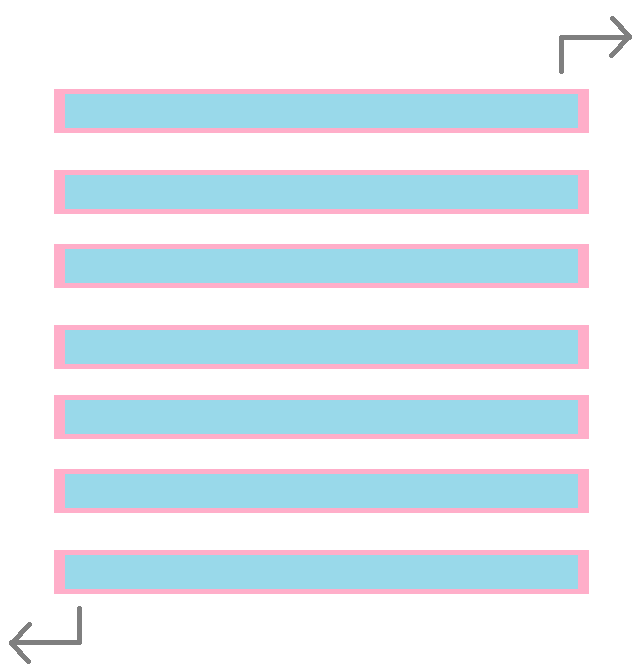
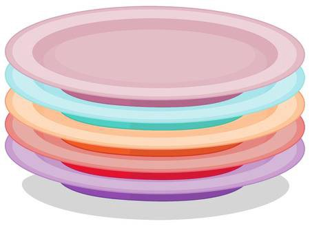
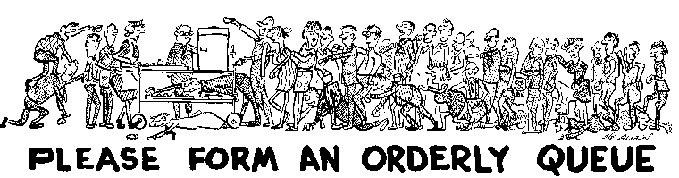
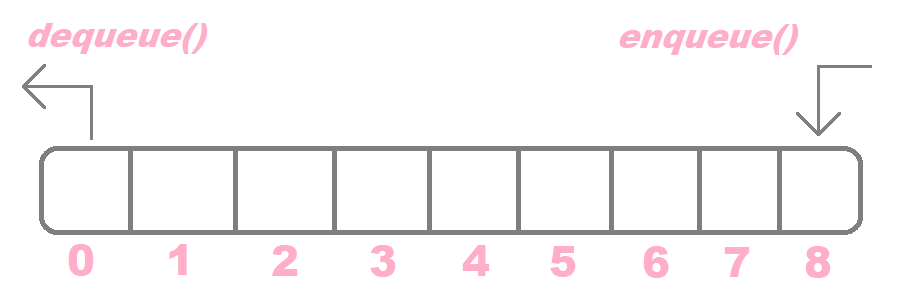
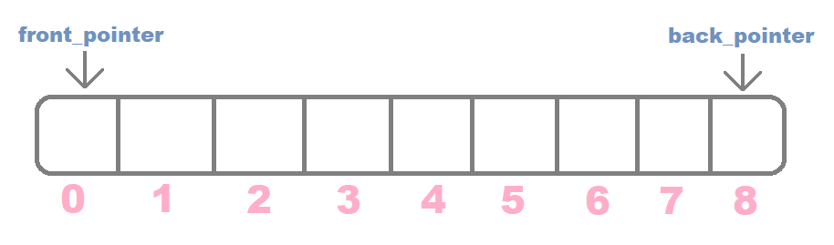
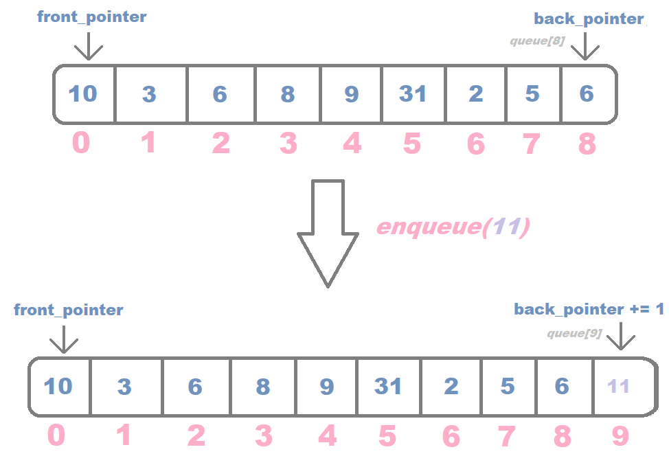

Abstract Data Types: Stacks and Queues
by Marco Angelo
Stacks and queues are two types of abstract data types that you can use to store and retrieve data in different ways.
Stacks have a last-in-first-out mechanism (LIFO), while Queues have a first-in-first-out mechanism (FIFO). But what does this mean?
Stacks (LIFO)
Stacks can be compared to piles of plates. When you have a whole pile of plates, you can only add a new plate on top of the pile, aka the top of the stack. The last plate you put on top is also the same plate that first gets out, hence the LIFO (last-in-first-out) mechanism.
The 2 most important methods in a stack are push() and pop(). Push() adds a new item to the top of the stack, and pop() removes the item at the top of the stack.
Just like a stack of plates, you can only add — push() — and remove — pop() — from the top of the stack. Aka, adding or removing from the “last” plate.
Stack Implementation
All stacks require only one pointer looking to the end of the stack. Whenever a push() or pop() operation is performed, the pointer should always increment/decrement to the “top” of the stack. A common data structure used to implement stack is an array.
For push(), the stack pointer will always increment to the index of the new element being “pushed.”
For pop(), the stack pointer will always decrement to the index of the element before the element being “popped.”
Note that pop() doesn’t take any parameters, but push() does. This is because pop() removes the last element no matter what, while push() adds an element, which means you’ll need to specify an element to add.
When dealing with stacks in code, there are some considerations to take:
- underflow: an exception will be thrown if popping from an empty stack.
- overflow: account for resizing the stack implementation when pushing to a full array.
Think back again on the analogy of a stack as a pile of plates. The more plates you pile on top of each other, the first plate to get removed will always be the last plate you put on. Hence, the plate that’s always on top is the first to get removed.
Queues (FIFO)
Queues are pretty much what their name implies: think of queues as a line of people. Imagine a line of people at the box office of a movie theater: whoever gets there first is the first to get their ticket, and whoever falls behind purchases their ticket in the order they got there. Pretty simple, right?
The 2 most important functions in a queue are dequeue() and enqueue(). The function dequeue() removes the first element of a queue, and enqueue() “pushes” an element to the end of the queue. This makes sense in the context of a line of people — whoever is first in line dequeues (gets removed), and whoever joins the line enqueues (gets added to the back of the line).
The first element you enqueue() is the first element to be removed, hence the FIFO (first-in-first-out) mechanism.
Disclaimer: dequeue() can sometimes be referred to as pop(), but for the sake of consistency and to avoid confusion with the pop() function for stacks, I will refer to it as dequeue().
Queue Implementation
A common implementation of a queue is with Doubly Linked Lists, so we will use that data structure to analyze the handling of pointers. Each element of the queue will be referred to as a Node.
Just like stacks, queues in a Doubly Linked List contain a pointer referring to the last item. The only difference is that queues require 2 pointers looking to the beginning and end of the queue to take advantage of the dequeue() and enqueue() functions.
Once you enqueue() a node to the queue, the back_pointer increments by 1.
However, dequeue() is a lot trickier than enqueue(). This is because once you remove from the front of the queue, you’d have to deallocate the memory from the previous node and make the pointers account for the new size of the queue.
So once you dequeue() an element from the front of the queue, the front_pointer moves to point to the next node while retaining the same location in the Linked List, and you deallocate the space for the first node. In effect, the back_pointer decrements by 1 to account for the new size.
It is easy to think of a queue as a line of people. To enqueue() means that more people are falling into the back of the line, and dequeue() means that the person who got there first, no matter who they are, will be let through first. No matter how large the queue is, the person who arrives first will always be the first to leave. Queues can also be thought of as a “first come, first serve” type of data structure, where deletion and insertion happen on different ends.
Conclusions
Stacks
- Stacks have a LIFO(last-in-first-out) structure, where deletion and insertion happen at the same end.
- Stacks have 1 pointer looking to the end (“top”) of the stack.
- Stacks use pop() and push() functions — removing and adding elements to the top of the stack.
Queues
- Queues have a FIFO (first-in-first-out) structure, where deletion and insertion happen at opposite ends.
- Queues have 2 pointers looking to the front and back of the queue.
- Queues use enqueue() and dequeue() functions — adding to the end of the queue and removing from the front of the queue.
This article was taken from my Medium blog.
Share this article!